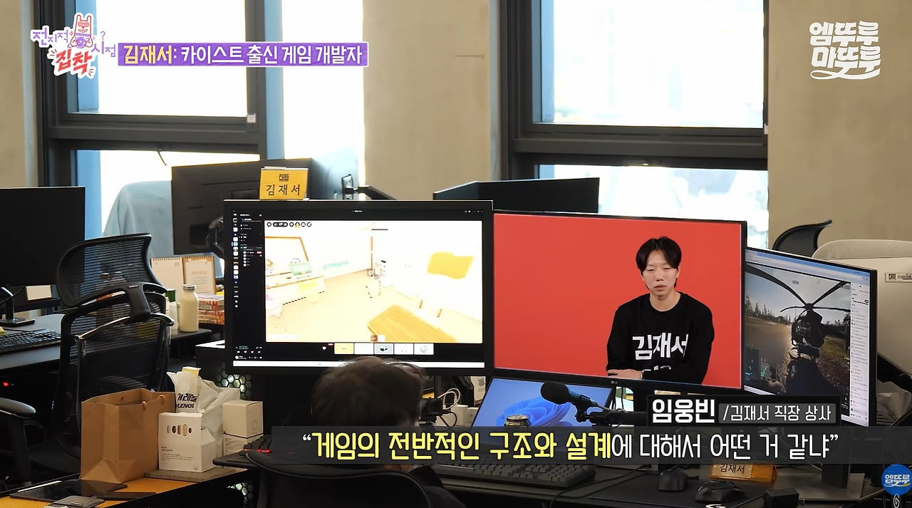
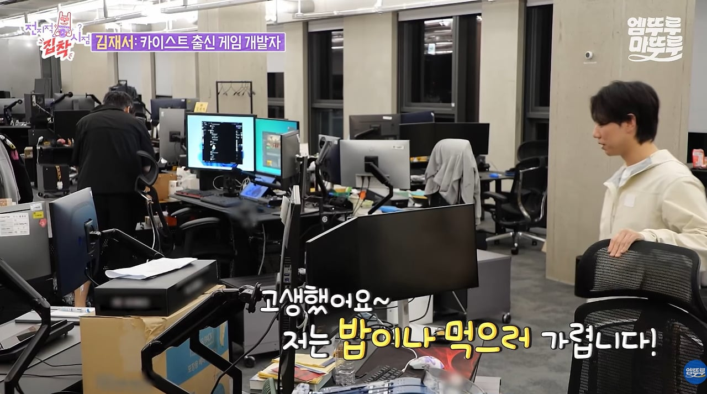
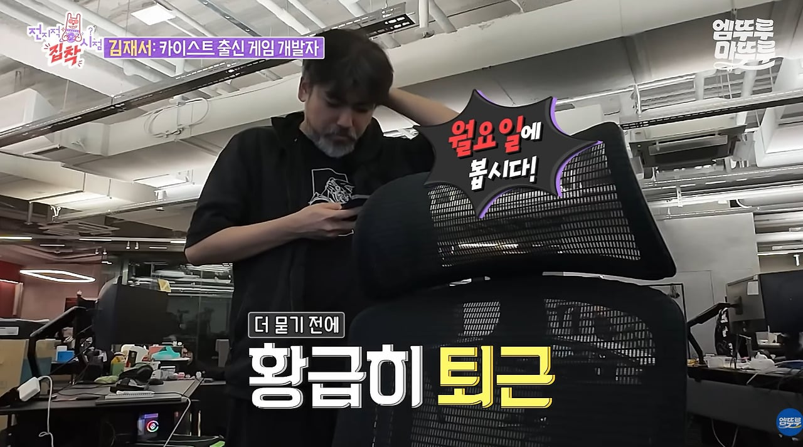

롤 얘기가 반이네 ㅋㅋㅋㅋㅋㅋㅋㅋㅋㅋㅋㅋㅋㅋㅋㅋ
증바람 못참긴 해
반팔후드티부터 찐이네..
넥슨 다니던 친구가 저랬는데... 주말에도 출근해서 게임하고..
을지로가 오덴데.. 나도 몰라
뭐 택시 기사야? 을지로 알아야 인생에 도움이 됨? ㅋㅋㅋㅋ
가봤다 안가봤다 이정도가 끝이지
철권하면서 을지로 많이 들음
친구도 없고, 여친도 없고, 모쏠이고...
친구랑 여친 만나고 싶어도 불가능하니까 주말까지 회사에 있는 걸텐데 참 볼때마다 안타까움
이라고 쓰고보니 친구없고 여친없고 모쏠인건 개붕이 평균이잔아?
저사람은 능력이라도 있네
나훈아+애굽민수 느낌이다
나도 저래사는데 시발 이게 맞나 모르겠다
뭔가 멋있게 생기셨는데
나도 저렇게 일 좋아하면 좋겠다
아 개 하기 싫어
이집트 학자 아니심?
뭔지알겠음
ai가지고노니까 재밌어서 주말에도 일생각나더라